El cielo tiene lista de invitados.Heaven has a guest list.
For gods, mortals & other guests.

Una casa para el banquete, el deseo y las noches largas.A house for feasting, desire & late nights.
Cuatro mundos comparten una casa colonial en el Centro Histórico. El día empieza con café y aperitivo en La Domenica, sigue con el fuego de Kanibal, se viste para el banquete de SLVJ y termina cuando la noche decide. Entras por una puerta; lo que pasa adentro depende de a qué mundo le respondas.
Four worlds share one historic house in the old city. The day opens with coffee and aperitivo at La Domenica, moves into the fire of Kanibal, dresses up for the feast at SLVJ and ends whenever the night says so. You come in through one door; what happens inside depends on which world calls you.


En la cena, compórtate.At dinner, behave.
Después, lo que sea.After dinner, anything.
For gods, mortals & other guests.
Lo que pasa adentro.What happens inside.
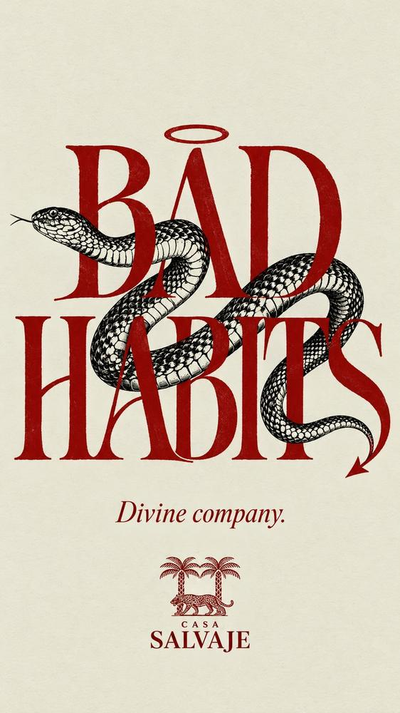
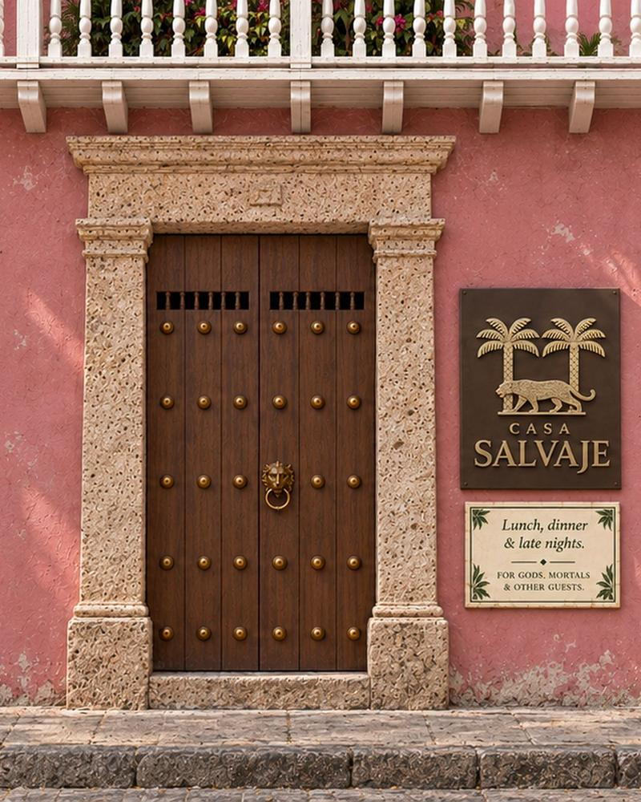

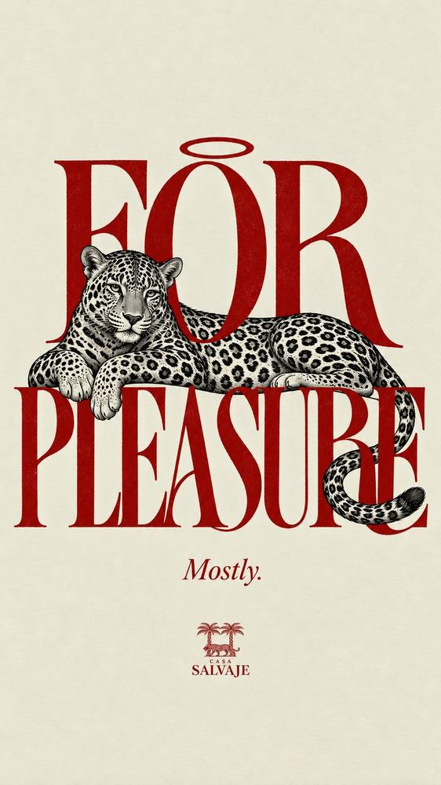

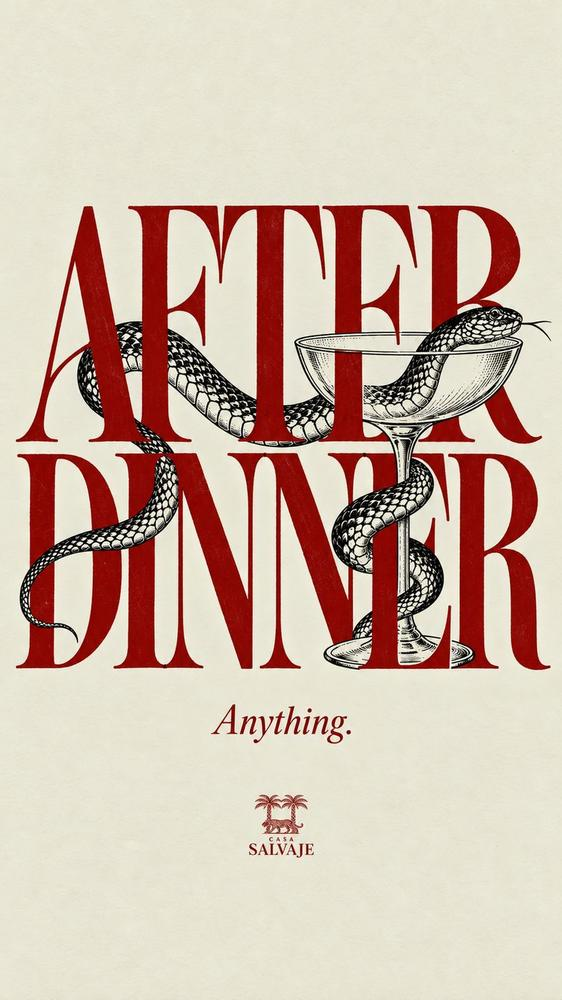
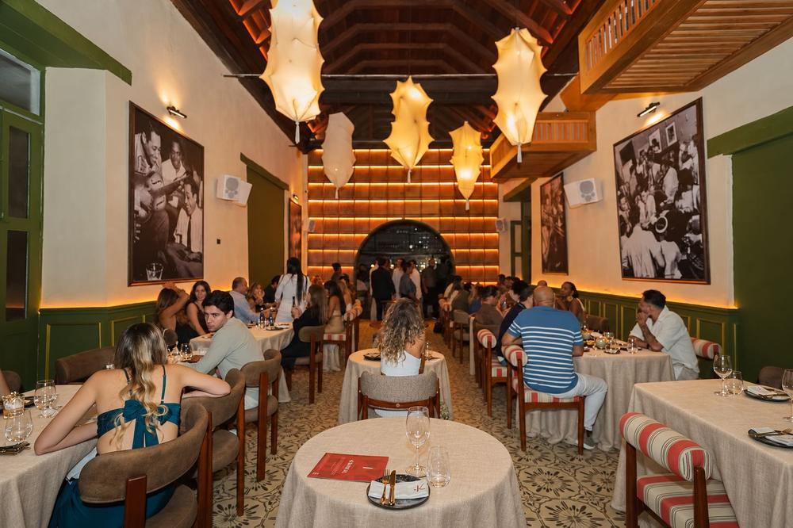
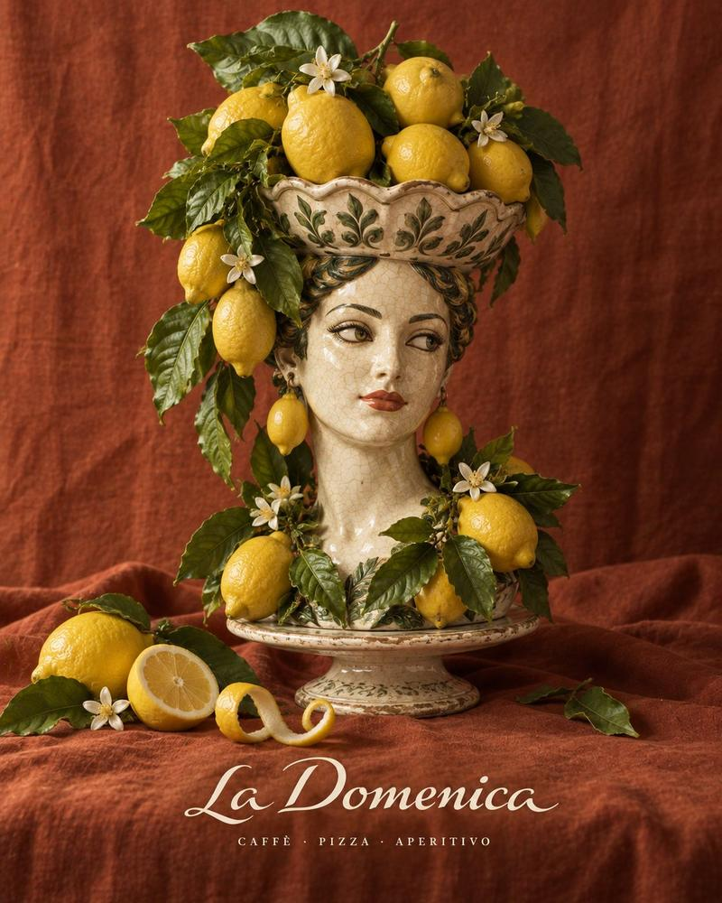
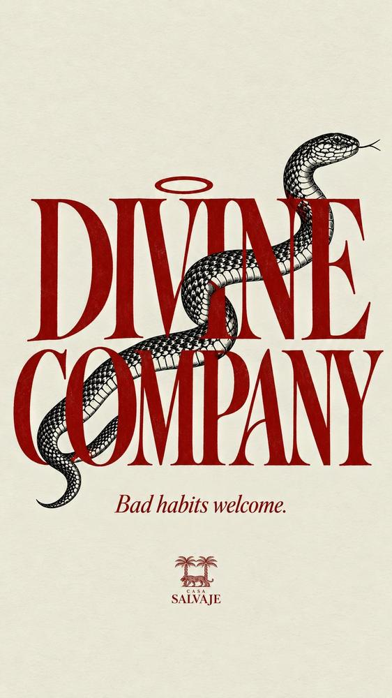
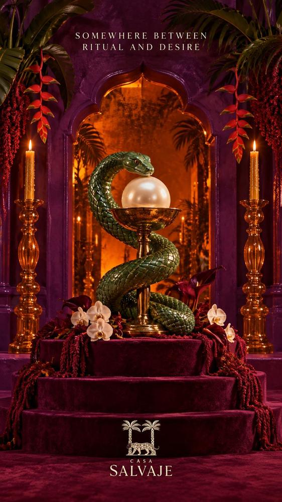
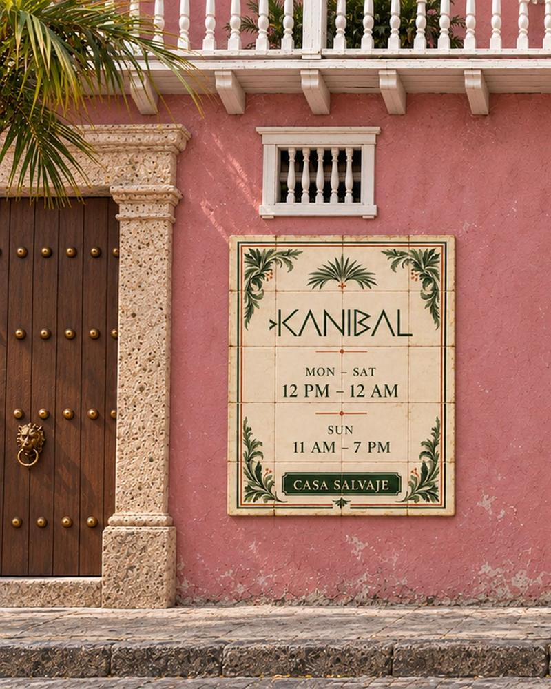
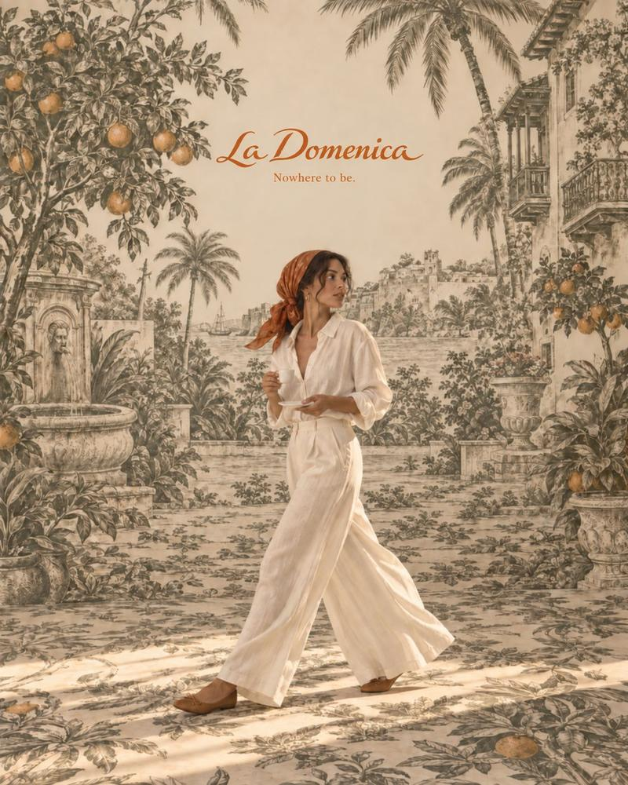
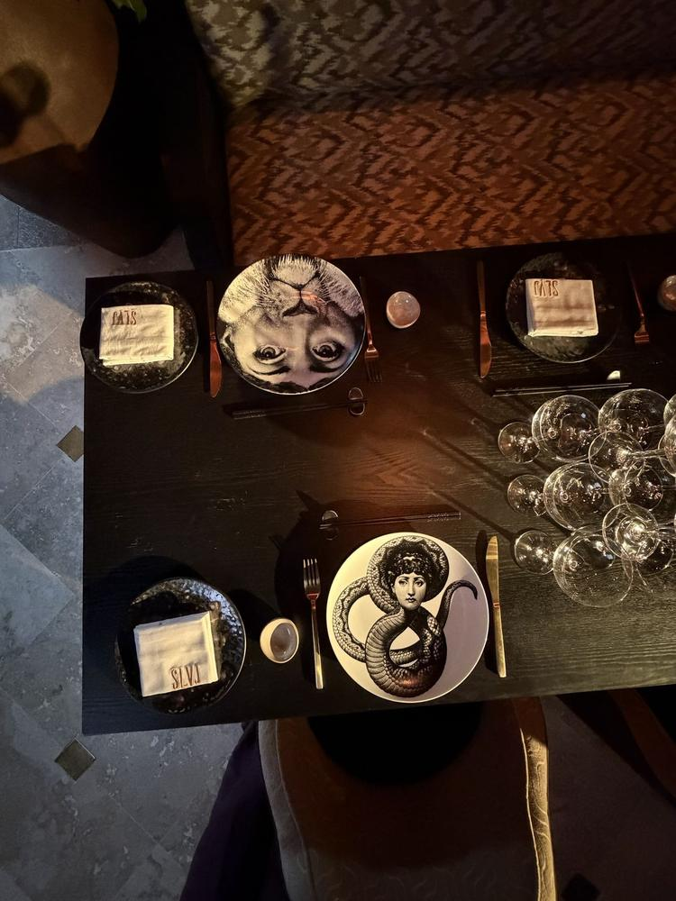
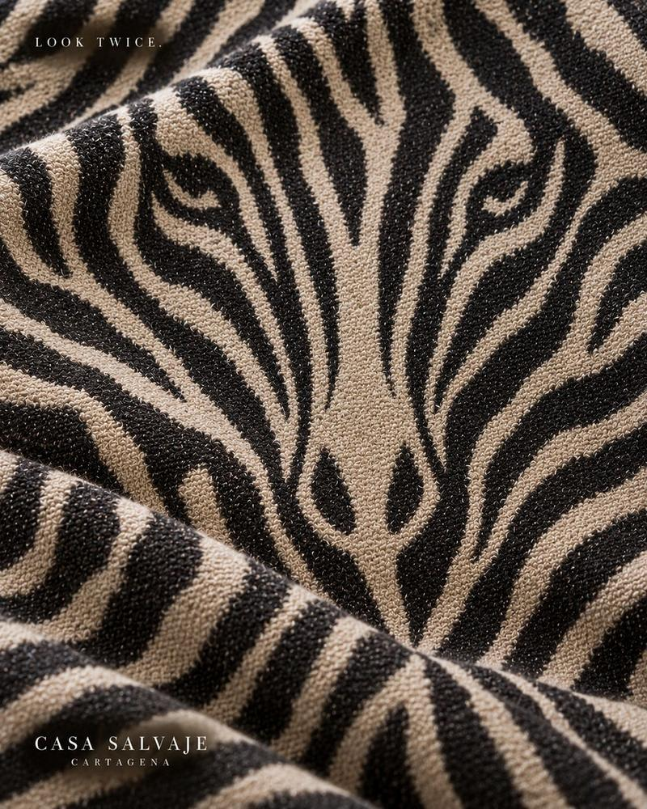
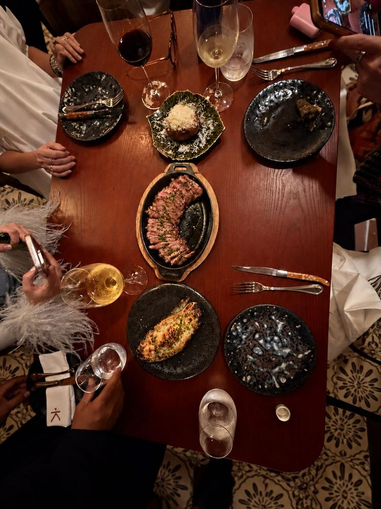
Fechas con cupo. Reserva antes de que se acaben.Dates with limited seats. Book before they go.
- Último martesLast Tuesdaycada mesmonthlyOmakaseEn la barra de sushi de SLVJ, cupo limitado. Próxima fecha por anunciar en la lista.At the SLVJ sushi bar, limited seats. Next date announced to the list first.Quiero cupoSave me a seat
- 30 oct – 1 novHalloweenTres noches de HalloweenThree nights of HalloweenCena en la casa y la fiesta después en SLVJ. Programa y precios pronto.Dinner in the house, the party after at SLVJ. Programme and prices soon.ReservarBook
- Todos los díasEvery daycocina hasta la 1 amkitchen until 1 amAlmuerzo y cena tardíaLunch and late dinnerLa Domenica, Kanibal y SLVJ de día. Cocina abierta hasta la 1 de la mañana.La Domenica, Kanibal and SLVJ by day. Kitchen open until 1 am.ReservarBook
Donde Baloco se encuentra con Santa Teresa.Where Baloco meets Santa Teresa.
Centro Histórico, Cartagena de Indias
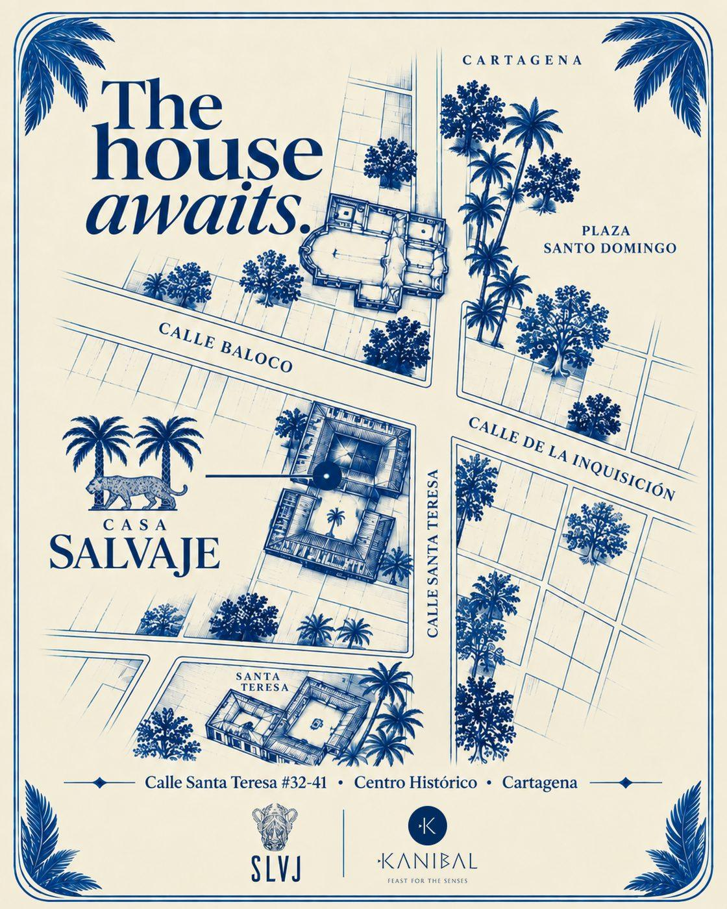
Deja tu nombre en la puerta.Leave your name at the door.
Para reservar mesa hoy, escríbenos por WhatsApp. Para invitaciones, fiestas, experiencias con cupo y la apertura de ONO, entra a la lista.
To book a table today, message us on WhatsApp. For invitations, parties, limited-seat experiences and the opening of ONO, join the list.